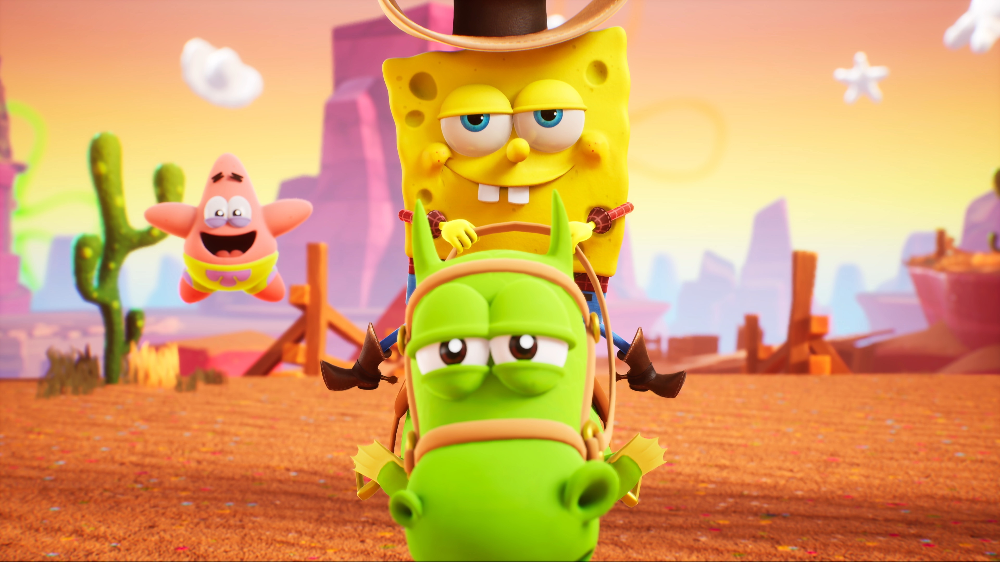

《海绵宝宝》经典台词
准备好了吗，孩子们
“今天的不开心就到此为止吧，明天依旧光芒万丈啊！”
这种乐观的情绪非常有感染力。它展现了海绵宝宝能够快速调整自己的心态，不被负面情绪所左右，总是能看到生活中的美好和希望，鼓励自己也鼓励身边的人。
“派大星，你是我最好的朋友！”
直白地表达了对朋友的珍视。海绵宝宝毫不掩饰自己对派大星的友情，这种真诚的情感在很多情节中都有所体现，比如在遇到困难或者分享快乐时，他总是第一时间想到派大星，并且用言语表达对他的重视。
“我爱我的工作，我要让大家都吃到美味的蟹黄堡！”

派总语录
知识不能替代友谊，比起失去你，我宁愿做个白痴。”
这句台词深刻地体现了派大星对海绵宝宝友谊的珍视程度。它表明在派大星的价值观中，朋友的陪伴远远比知识等其他东西重要得多。即使被别人认为是 “白痴”，他也毫不介意，只要能和海绵宝宝在一起就好，这种纯粹的友情观念令人动容。
“我生下来就是为了与你相遇。”
这是一句充满宿命感的表达友情的台词。它把两人的相遇看作是命中注定，强调了派大星对于和海绵宝宝之间友谊的一种信仰，好像他的生命因为海绵宝宝的出现才有了完整的意义。
“You had a chance, but you lost it. You can't always live in the past.”（你本来是有机会的，但是你输了，你不能总是活在过去。）